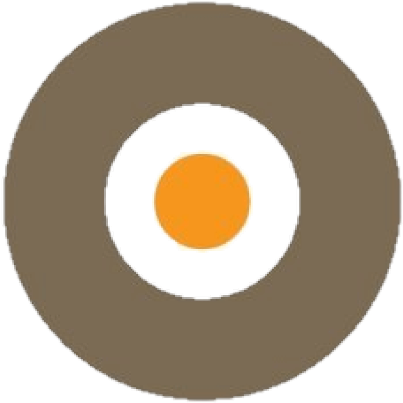

Sobre mi
Soy un ingeniero informático gallego que se encuentra ahora mismo viviendo en Santiago de Compostela.
Con un máster en Ingeniería Web, 2 años de experiencia como desarrollador FullStack y con capacidad para hablar de forma fluida en idiomas español, inglés y gallego, busco aprender y participar en el desarrollo de proyectos con los que encontrar mis límites y crecer profesionalmente.
Versátil
Tengo más experiencia es en el desarrollo FullStack pero también tengo conocimientos en desarrollo a bajo nivel, administración de servidores así como codificación de audio y video. Me gusta experimentar y probar nuevos campos dentro de la informática.
Busco la manera de automatizar las tareas
Las tareas repetitivas son mi peor enemigo y cuando tengo que enfrentarme a ellas siempre buscaré una manera de automatizarlas y evitar a toda costa hacerlas a mano.
Al tanto de las novedades tecnológicas
Me informo habitualmente de las nuevas tecnologías y siempre me pregunto en que proyecto podría emplearlas para tener la oportunidad de aprenderlas, o para solucionar un determinado tipo de escenario.
Trato de encontrar una manera de hacerlo mejor
No me conformo con solucionar el problema y siempre intento buscar la mejor manera de resolverlo.
Motivaciones
- Un reto que me haga plantear muchas posibilidades para poder resolverlo.
- Entorno cambiante donde pueda aprender nuevas tecnologías.
- Libertad. Tener la libertad para configurar mi entorno de trabajo y no tener restricciones cuando voy a resolver un problema me ayuda a maximizar la productividad.
Aficiones
- Pensar
- La música
- Reparar aparatos electrónicos
- Escapar de la rutina
- Gimnasio y boxeo
Estudios
Software Development
Durante mi estancia en el CIT he estudiado en la rama de
desarrollo del software, donde he aprendido a
desarrollar
aplicaciones web progresivas, a
analizar datos usando
Hadoop y Spark así como a desarrollar
plugins y herramientas para el gestor de contenidos
Drupal. En esta etapa también participé
en un curso de diseño lo que me
proporcionó unas nociones para mejorar el aspecto visual
de nuevas interfaces de usuario que pudiese desarrollar.
Gracias a esta oportunidad pude mejorar mi nivel de
inglés hasta el nivel de poder
mantener una conversación en este
idioma sin dificultad.
Master en Ingeniería Web
El máster en Ingeniería Web me ofreció una formación transversal dentro de la Ingeniería Informática. Desde administración de sistemas como administración de servidores web Apache y Nginx, recuperación de datos y machine learning hasta frameworks web y patrones de diseño. Con esto el máster me proporcionó un amplio abanico de conocimientos haciéndome una persona versátil en el ámbito de la informática.
Grado en ingeniería informática
Una carrera con una formación mayormente práctica que me
sirvió para establecer las bases de la Ingeniería
Informática. Dentro de las habilidades adquiridas
durante esta etapa he de destacar:
resolución de problemas, trabajo en equipo y
organización
para afrontar las prácticas que nos proponían.
Durante la carrera aprendí a programar usando
C y Java
como principales lenguajes de programación sobre los
cuáles se han sustentado mis conocimientos.
Trabajo
Enxine
Sobre la empresa
Enxine es una empresa especializada en Internet de las Cosas. Ofrecen todo tipo de soluciones hardware o software para controlar y monitorizar componentes electrónicos a través de internet.
Trabajo realizado
Dentro de la empresa he participado en el mantenimiento y desarrollo de nuevas funcionalidades dentro de la parte de backend de un sistema que se encarga del control de cargadores de coches eléctricos. Este sistema pertenece a Efimob, empresa que proporciona una red de cargadores para coches eléctricos en toda España. La monitorización, pago automático de recargas, mantenimiento y control de estos cargadores son algunas de las funcionalidades que este sistema incluye y en las cuales yo participo activamente.
Tecnologías usadas
 Javascript
Javascript
 NodeJS
NodeJS
 PostgreSQL
PostgreSQL
 Redis
Redis
Overon
Sobre la empresa
 Empresa multinacional de telecomunicaciones cuya principal fuente de ingresos es la difusión de contenidos multimedia.
Trabajo realizado
Durante mi período en Overon me encargué del desarrollo de un transcodificador que tenía la misión de transformar una señal de video/audio y subtítulos desde cualquier formato u origen a un formato que pueda ser interpretado por cualquier navegador web. Junto con el transcodificador también cree un reproductor web a medida para la empresa.
Tecnologías usadas
 GoLang
GoLang
 FFmpeg
Javascript
FFmpeg
Javascript
Connectors
Sobre la empresa
 Agencia de movilidad internacional que
facilita experiencias en el extranjero con el fin de
mejorar las capacidades lingüísticas y formativas de las
personas.
Agencia de movilidad internacional que
facilita experiencias en el extranjero con el fin de
mejorar las capacidades lingüísticas y formativas de las
personas.
Trabajo realizado
Desarrollé una red social multiplataforma que fomenta las relaciones entre los clientes adscritos a los programas de movilidad asi como la comunicación entre la empresa y sus clientes. Entre algunas de las funcionalidades de la red social se incluye la subida y gestión de imágenes, creación de grupos, gestión de roles, permisos, usuarios y chats grupales.
Tecnologías usadas
 React & Redux
React & Redux
 Spring
PostgreSQL
Spring
PostgreSQL
Amazon Provider
Sobre la empresa
Durante mi estancia en Reino Unido he trabajado para un pequeño proveedor de Amazon.
Trabajo realizado
El trabajo que hice fue el de crear un software cuyo objetivo era la automatización de procesos como llevar un registro de los productos y su stock, los pedidos y la generación e impresión de las etiquetas de envío. La visualización de los registros y ejecución de las tareas podían realizarse a través de la interacción con una interfaz gráfica.
Tecnologías usadas
 Java
PostgreSQL
Java
PostgreSQL
Plexus
Sobre la empresa
 Empresa internacional de consultaría software
Empresa internacional de consultaría software
Trabajo realizado
Participé en el desarrollo de un sistema de ingesta de datos y su procesado para la muestra de estadísticas sobre ciertos parámetros como puede ser el sexo, edad, localidad.. de gente que realiza conexiones desde diferentes plataformas. Participé en la refactorización de una base de datos y el sistema asociado encargado de realizar la gestión de usuarios para distintas aplicaciones haciendo uso de servicios Web REST
Tecnologías usadas
Java
 MySQL
MySQL
Habilidades
Lenguajes de programación
 C
Java
Javascript
GoLang
C
Java
Javascript
GoLang
 Python
Python
 HTML
HTML
 CSS
CSS
Bases de datos
PostgreSQL
MySQL
Redis
 OracleDB
OracleDB
Frameworks
Spring
NodeJS
React & Redux
 Angular
FFmpeg
Angular
FFmpeg
Otros conocimientos
 Linux
Linux
 Git
Git